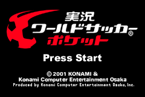

Jikkyou World Soccer Pocket (Japan)
Stateless / Passcode 💾 MultiBoot 🎮 4P Link
Cartridge Identity
- Game Code
AJWJ(FamilyAJW)- Header Title
W.S.POCKET- Maker / Revision
A4/ rev0- ROM Size
- 8.0 MiB (8,388,608 B)
- Save Media
None / Unknown- SHA-256
834f5b79a18b456e1f765e4531b68745daeb8244b37fcc834fb064101ba8025e- Engine / SDK Group
comm-002(145 families)
Screenshots


Link Cable & Multiplayer Communications
This title contains detected communication capabilities: 💾 MultiBoot 🎮 4P Link.
Detailed protocol specifications, SIO registers, Joybus commands, and MultiBoot sequences are documented in the Link & Multiplayer Reference.
- Multi-Player SIO (4P)
- 16-bit ring network · SIOCNT (
0x04000128) literals:0x00031c,0x000398,0x0003c0· SIODATA32/SIOMULTI0 (0x04000120) literals:0x0006c4 - Single-Cart MultiBoot
- Single-Cartridge MultiBoot (Download Play) client/server handler · Thumb SWI 0x25 (
0xDF25):0x41a500,0x43c30e,0x468f32,0x4aa28c
Cartridge Storage Architecture: Stateless / Passcode
Zero non-volatile battery hardware: This cartridge PCB contains ROM only (no SRAM, Flash, or EEPROM chips). Progression is preserved via on-screen passcodes or session-only gameplay. No
.sav file is generated or required.
ROM Assets, Compression & Audio
- BIOS Compression
- LZ77 (
0x10): 0 streams · RLE (0x30): 0 streams - ROM Pointer Tables
- 57 tables (0 pointing to validated compressed streams)
- SDK Backup Tags
EEPROM_V122
Asset Map (formatkit.asset-map.v1)
Download AJWJ-r0-834f5b79a18b456e.asset-map.json.gz (119,134 B (116.3 KiB)) Verified PASS · 6.03% coverage
| Metric | Bytes / Value | Entries |
|---|---|---|
| Identified | 152,448 B (148.9 KiB) (1.82%) | 1,129 |
| Mapped | 0 B (0.00%) | 0 |
| Opaque | 353,196 B (344.9 KiB) (4.21%) | 1 |
| Unknown | 7,882,964 B (7.52 MiB) (93.97%) | 871 |
| Total ROM Size | 8,388,608 B (8.00 MiB) | 2,001 |
| Coverage % | 6.03% | — |
| Entries w/ Code Refs | 1,215 / 2,001 (60.72%) | — |
Top Identified Formats: gfx.gba-palette (1,128 · 152,256 B (148.7 KiB)) · gba.rom-header (1 · 192 B)
Largest unknown Extents (Headerless / Custom Asset Candidates)
| Offset | Size | Shannon Entropy | Code Refs |
|---|---|---|---|
0x00408820 | 3,806,260 B (3.63 MiB) | 6.732 bits/B | 0 |
0x002C2D40 | 200,636 B (195.9 KiB) | 7.056 bits/B | 0 |
0x002F3D1C | 193,724 B (189.2 KiB) | 6.925 bits/B | 0 |
0x00393434 | 189,136 B (184.7 KiB) | 7.633 bits/B | 0 |
0x0002F124 | 135,380 B (132.2 KiB) | 6.319 bits/B | 0 |
gzip -dk AJWJ-r0-834f5b79a18b456e.asset-map.json.gz && gbakit map verify rom.gba AJWJ-r0-834f5b79a18b456e.asset-map.json
gbakit assets export rom.gba --asset-map AJWJ-r0-834f5b79a18b456e.asset-map.json -o out/Text, Fonts & Scene Data
- Primary Text Encoding
- 16-bit / UTF-16LE text (
2ASCII strings ·1Shift-JIS runs) - Font & VWF Indicators
- VWF Width Table 1bpp Font · BIOS SWIs: BitUnPack
0x10:0· LZ770x11/12:14· Huffman0x13:1· RLE0x14/15:1 - Scene & Packaging
55ROM pointer tables (≥32 entries,5≥200) ·19relativeu32TOCs ·164OAM metasprite hits
Hardware MMIO Subsystems
ppu_display0x8001830